Dwarf Fortress
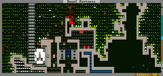
Как-то так… Помните фразу из первой Матрицы про то, что оператор вместо цифр на экране начинает видеть мир?
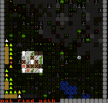
…или так.
Slaves to Armok: God of blood; Chapter II: Dwarf Fortress — игра про дварфов, эльфов, гоблинов, драконов, демонов, вампиров, некромантов и прочую фентезийную шушеру. Вы таки будете смеяться, но эпичная в обоих смыслах этого слова.
В настоящий момент готова процентов на пятнадцать от задуманного, хотя даже эти проценты впечатляют. Скажем так, тот самый Сталкер, если был бы сделан как обещан, уложился бы от силы в треть всех фич, имеющихся сейчас в DF.
Щито эта?
По своей сути — стратегия со вкусом рогалика. Рогаликовая часть делается создателем игры по остаточному принципу и все ещё малоинтересна — можно заглянуть в собственную заброшенную крепость, да немного поработать охотником за головами. Режим крепости же — помесь сеттлерсов (мощная экономическая составляющая) и Dungeon Keeper’a (копай, назначай комнаты, поддерживай всех в хорошем состоянии духа и прочий микроменеджмент), приправленная всевозможными фичами из рогаликов (вроде случайной генерации миров). В настоящий момент в ванильной версии полноценно играть можно только за дварфов, зато дварфы тут как в Disciples — самые дварфистые из дварфов, квадратные, вечнопьяные и в адамантине!
Игра генерирует мир по заранее заданным параметрам (можно создать как candyland, так и адские пустыни, и замороженные ледники с чудовищами, хотя, обычно, стандартный мир имеет и то, и то), заселяет его существами, прогоняет несколько сотен лет истории: войны, колонизации, нападения монстров на города etc (правда никто не мешает вам поправить конфиг и начать как в первом, так и стопицотом году). И только после всего этого пускает туда игрока. Далее игрок выбирает маленькую частицу мира и заселяется в ней.
Игроку предстоит с командой из семи дварфов построить крепость, которая станет (или не станет, а погибнет от тысячи разных бед от голода или нападения гоблинов до приступов сумасшествия её обитателей) будущим центром дварфьего царства.
А зачем тут дварфы? Что в них такого?
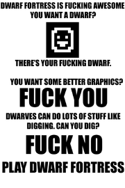
Играй в DF, сука!
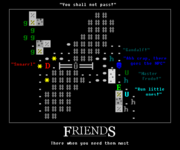
At least you can roleplay!
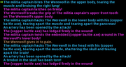
Шокирующие кадры: ополченец загрызает оборотня!
Высокая меметичность самой игры, благодаря различным мелочам:
- При первом знакомстве — рвёт шаблон, совсем.
- Каждое существо сделано не из хитпоинтов, а из вполне так реальных мясных рук, ног, пальцев, мозгов, глаз, хвостов и копыт. Если дварф схлопочет открытый перелом и не загнётся чуть позднее от гангрены, то кость срастётся и останется шрам. Потеряет глаза — ослепнет на остаток жизни, тяжелое ранение сердца — мгновенная смерть, а если задержится в слишком тёплом месте — медленно вскипит, начиная с подкожного жира. С таким сложным устройством живых существ был связан забавный баг, по механике игры одно время мозг был плавно распределён вокруг черепа, а лёгкие находились над рёбрами.
- В DF реально огромные и случайно генерируемые миры со своей историей и прочими плюшками. Что характерно, миры создаются не только на плоскости, но и вглубь — вместе со всеми подземными пещерами и их жуткими обитателями. Не понравился сгенерированный мир? К твоим услугам любое другое зерно для генератора псевдослучайных чисел!
- Если хочется, то можно просмотреть историю, каждую битву, по каждому нанесённому удару (в режиме крепости отчеты о битвах доступны по клавише «r»). О любом персонаже, даже жившем сколько-угодно лет назад, можно узнать самую подробную информацию. Более того, например, игрок напал на город и жестоко поубивал там женщин, детей и прочих свиней. Не стоит удивляться, если через несколько лет вы найдёте предмет, фреску или запись, описывающую это событие.
- Температура, погода, сила притяжения сделаны далеко не для галочки и оказывают весьма сильное влияние на игру, зачастую фатальное: очень неприятно, когда 80% земной поверхности — то самое «слишком тёплое место» из пункта выше. А ещё можно навалить острых железных штук в вагонетку, потом эту вагонетку разогнать и запустить по склону в небо. По всем законам физики содержимое разлетится дробью калеча и убивая всех неудачников на пути.
- ОЧЕНЬ мощная геологическая составляющая (уж дварфы-то геологию должны знать). Более восьмидесяти подвидов камня, около двадцати видов почвы, всевозможные руды, сотни драгоценных камней и тому подобное.
- Нет условий победы, но слить крепость можно тысячей способов, например, задавив чью-то кошку или дёрнув не тот рычаг.
- Игровая механика позволяет построить элементы двоичной логики посредством стен, дверей, рычагов и триггеров. Таким образом, в теории можно создать работающий, к примеру, шахматный автомат или калькулятор. Или даже x86!
- Обезумевшая слепая мать сломала всю мебель в свой комнате и разорвала своего ребёнка на части, подоспевший на помощь легендарный кузнец не успел спасти младенца и был вынужден задушить безумную, напавшую на него. И такие ужасы сплошь и рядом.
Litast Idenudesh, baby, is throwing a tantrum! Inod Litastrilem, Mayor, has lost consciousness. Inod Litastrilem, Mayor, has bled to death.
безумные дети такие безумные
Kol Tölunimush has been ecstatic lately. He killed somebody by accident while sparring recently. He took joy in slaughter lately. He has lost a lover to tragedy lately. He has witnessed death. He had a satisfying sparring session recently.
«I swear to god once I saw a dwarf who was labeled as being Strong, Very Agile, Very Tough... and Clean. But it was probably just a bad dream.»
— Анонимус
- Vomit, а также иные субстанции, такие как кровь, потроха, грязь, вода и прочее. Toady реализовал возможность существ перемазаться во всем этом великолепии по самое небалуй. Почти два года жители всех случайно сгенерированных миров представляли собой несчастных перемазаных в блевотине, крови и грязи созданий, но наконец в новой версии стало можно мыться. А также добавили медицину, яды, костыли, заражённые гнойные раны и другие санитарные радости.
- Артефакты, любого дварфа один раз в жизни может жестоко торкнуть (а что вы хотите, они же всю жизнь бухают не просыхая) и он может запереться в мастерской и сотворить шедевр. Если игрок родился под счастливой звездой, то это будет украшенная алмазными стразами и CP картинками в золоте адамантиновая сабля «Всем пиздец», если не очень, то вполне можно получить на выходе самотык из костей кота с шипами из кожи верблюда «Чёрный Властелин любит тебя», а если безумный дварф будет совсем не в духе, то и из костей подвернувшегося под горячую руку соплеменника.
- Очень необычная реализация графики: по умолчанию используется псевдографика, рисуемая OpenGL’ем. Кроме шуток.
- Юниксоиды могут гонять игру на удалённом сервере через ssh, используя тру-текстовой терминальный режим. Для этого следует установить параметр [PRINT_MODE:TEXT] в файле data/init/init.txt. И да, игра мультиплатформенна.
- И самое главное — можно грабить корованы (пруф здесь). Причем если как следует этим достать их владельцев — пришлют армии и ограбят игрока.
Местечковые мемы
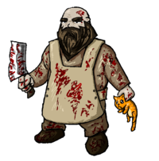
Борьба с котострофой.
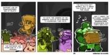
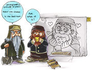
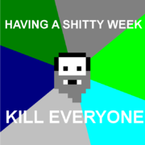
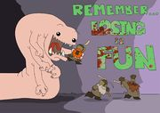
- Urist (в полном варианте что-то вроде Urist McDwarf) — универсальное дворфье имя, вроде Васи Пупкина, а также единицы измерения (градусы Уриста, например). Произошло от одного из ранних описаний (а что вы хотели? ролевики же!) игровой сессии. На языке дварфов означает «кинжал».
- Котострофа (именно так, с двумя дополнительными О, в оригинале — catsplosion) — необратимое размножение котов с невозможностью их уничтожения без огорчения их владельцев. Если ситуация совсем запущена, то для того, чтобы не допустить Tantrum Spiral (см. ниже) коты уничтожаются вместе с их хозяевами, а также друзьями и родственниками хозяев, если потребуется. А кто сказал, что DF это добрая игра?
- Залей это магмой! (pour magma on it!) — главный универсальный ответ дварфоводов. ИЧСХ, полезный!
«I think I made fish too hardcore»
— Toady One
- Карпы — из-за особенностей игромеханики, рыба в DF некогда была настолько сурова, что могла затащить в воду гуляющего по берегу дварфа и порвать на куски (реально, руки отдельно, ноги отдельно). В игре реализована простая система: развиваешь навыки — прокачиваешь физические данные. И до того соответствующего фикса все подводные существа прокачивали навык swimming до супер легендарного, просто потому, что у них другого выбора нет, становясь суперсильными, мегаловкими и трувыносливыми. В такой ситуации самый жалкий карась становился настоящим megabeast`ом. Переходящее знамя самого ужасного монстра в игре карпы приняли от слонов, которые в свое время тоже были настоящими машинами убийства.
- В новой версии знамя сие переняли гигантские морские губки — принципиально неуничтожимые за неимением уязвимых мест комки пористой плоти, хотя в теории и неподвижные, но способные забодать неосторожного рыбака до смерти. Напавший на такую губку солдат (военные дварфы имеют необоримую склонность нападать на всё живое без приказа) будет бесплодно пытаться убить её, пока не свалится от усталости и не утонет в воде.
- Forgotten beasts — после выхода версии 31.01 и появления рандомно генерируемых «забытых тварей», которые могут состоять из случайного сочетания и количества конечностей, глаз, органов и из абсолютно любых субстанций, они стали настоящими пугалами этой игры. И в самом деле, как можно убить огромный глаз, состоящий из соли или огненную рогатую жопу? К счастью, в релизе 0.31.09 такие чудеса всё же стали смертны.
- Boatmurdered — наиболее известное описание коллективной (управление одной и той же крепостью по очереди) игры в DF на форуме Something Awful. Начинается относительно спокойно, но постепенно крепость скатывается в треш, угар
и содомию, Большой Пиздец и Драму. Породила множество мемов (именно в ней полностью раскрыта тема вышеупомянутых слонов-убийц).
«Dwarves are strange creatures who balance out at 'happy' because on one hand their wife was eaten by elephants and on the other they just ate in a REALLY NICE dining room.»
— shadow_archmagi
- Tantrum Spiral — дварфы существа очень нежные и ранимые и если, например, в ходе вражеской осады крепости у дварфа погибнет друг, любимая канарейка или враги украдут самолично им сделанный суперский золотой горшок, то такой дварф может впасть в лютое боевое безумие. Дальше он, например, убивает любимого верблюда другого дварфа и сам погибает от рук стражи. Хозяин верблюда, а также друзья-родня покойного могут сильно опечалиться, ну и процесс уходит в рекурсивный цикл. Крупная крепость, объятая безумием может опустеть менее, чем за сезон, в живых останутся либо несколько воинов-чемпионов с адамантиновыми нервами, которым придётся самолично убить почти всех спятивших обитателей, либо пара социопатов, которые в очередной раз пропустят всё веселье.
- Тапки смерти — некоторые существа, в частности Fire Imp, являются огненными и постоянно горят. Эти свойства сохраняют их тушки и полученные продукты, например, шкура. Сшейте из такой шкуры тапки, и надевший их умрёт мучительной смертью от болевого шока, так как у него сгорят ноги, just for lulz. А дварф, съевший мяса этого самого огненного беса мгновенно побежит за бухлом (или водой, если такового нет) и не успокоится, пока не выпьет полную бочку.
- Веселье (fun) — процесс проеба крепости по какой-либо из вышеозначенных причин. Произошло от фразы Toady One, которая впоследствии стала официальным девизом DF: «Losing is fun!» С весельем тесно связаны термин HFS aka Hidden Fun Stuff и адамантин.
- !!(слово)!! — так в игре обозначается горящий предмет. Добавление восклицательных знаков при общении на форуме придаёт дополнительный смысл словам. Например, !!FUN!! говорит нам, что в процессе уничтожения крепости всё сгорело (например, из-за дракона), а !!SCIENCE!! обозначает эксперименты с игровой механикой при участии магмы.
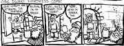
«Мне похуй!» Такая проблема случалась из-за того, что все бойцы отряда как утята всегда следовали за лидером. Получалось что когда лидер отряда во время осады спал или ел, весь отряд караулил его постель или стол. В настоящий момент исправлено.
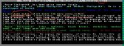
Да, этот младенец определённо дварф (признано багом, к сожалению).
Из-за того, что DF при вполне играбельном состоянии является «вечной» альфа-версией, множество весёлых моментов приходится на регулярно вылезающие баги, все их вспоминать смысла нет, но некоторые стоит:
- SHOES!!! — недочёт дизайна времён двухмерной версии, если во время битвы не следить за своими гражданскими дварфами, всячески их огораживая от зоны боевых действий, то они ломятся подбирать не только своих раненых недвижимых товарищей, но и ботинки и все остальные вещи, упавшие с убитых врагов и друзей, устремляясь прямо в гущу схватки с печальным исходом. А остальные бегут уже за его ботинками. Этот баг можно часто увидеть в ранних фан-артах. В настоящий момент все вещи павших товарищей и врагов автоматически (можно и отключить) помечаются как forbidden, запрещённые для дварфов, больше никаких самоубийств из-за старых носков.
- Надоедливый котобаг — проявлявшийся в надоедливом спаме о том, что кошка прерывает работы по переноске мыши в связи с тяжёлым ранением. Это происходит примерно так: кошка, убившая мышь, желает отнести её своему хозяину, чтобы похвастаться, но тут-то и подстерегает баг, переноску можно осуществлять только руками, и кошка думает: «Где мои руки!? Мои прекрасные руки! Они оторвали их! Боже мой! Какой кошмар! Что мне делать! эээ… стоп… я же кошка, у меня нет рук» и идёт по своим делам, предварительно наспамив сообщение о том, что ей оторвало руки.
- «melting rain» — в первых версиях 2010 года температура плавления подкожного жира была слишком низкой. Из-за специфики движка просто горячий воздух проблем не вызывал. Но если дварф сначала попал под дождь, а потом проследовал в горячее местечко (вроде комнаты с магмой за стеной) или просто постоял на солнышке, вода на нём нагревалась выше этой самой температуры, превращая последнего в дварф-фри. Хитрые и привычные дварфоводы сразу же нашли способ заставить это работать на себя.
- «бессмертная нежить» — так как неживые создания (например, Бронзовый колосс) не могут истечь кровью и не имеют органов, повреждение которых бы приводило к смерти, процесс их изничтожения превращался в сплошное веселье. И если нежить ещё можно было порубить на куски годика за полтора или уронить с бооольшой высоты вдребезги, то того же колосса можно только расплавить или заманить под пещерный обвал. Впрочем, в некотором смысле всё это вполне логично и «реалистично». Для исправление данного недоразумения автор таки забил в код костыль с хитпоинтами — и нежить погибает при накоплении определённого объёма повреждений. В 2012 году баг и вовсе стал фичей — в злых регионах любое убитое существо или часть его тела (например, шерсть или шкура) может в любой момент восстать и начать веселье. А потом опять, и опять, и ОПЯТЬ… пока тело не будет физически уничтожено. Не стоит расчитывать на то, что летающий скелет птицы перестанет летать, если у него отрубить крылья. Для желающих отсидеться в более спокойных регионах предусмотрены осады нежити под предводительством некромантов.
- «money bees» — когда в 0.31.19 Toady запилил пчеловодство, отдельной пчеле была присвоена ценность в несколько дварфовых денег. А их в улье сами знаете сколько. В результате, один улей с пчёлами оказывался стоящим как нехилая адамантиновая вундервафля, и устроивший пасеку получал раннюю осаду гоблинов из-за богатства своей крепости.
- Loyalty Cascade — недочёт в механике дипломатии. Каждое разумное существо может быть союзником или предателем своей цивилизации и своего местного правительства, всевозможных состояний четыре — «цп», «цП», «Цп», «ЦП» (заглавные буквы обозначают враждебность). Охрана дварфийского каравана с купцами имеет отношения союзничества / предательства только с цивилизацией, их состояния — «ц» и «Ц». В крепость прибывает караван с состояниями «ц». Мы приказываем нашему воину «цп» вероломно напасть на «ц», в результате он становится «Цп». К нему подходит другой наш солдат с состоянием «цп» и видя, в нём предателя, цивилизации нападает на него. Но, поскольку предатель был дружественен форту, атакующий предателя становится «цП». Предателя крепости «цП» видит третий солдат «цп», в результате мы получаем нового «Цп». «Цп» и «цП» сражаются друг с другом из-за предательства. Единственное, что здесь можно сделать — изолировать здоровую часть форта и дождаться, пока все зараженные поубивают друг друга, либо воспользоваться читерскими программами. Кроме нападения на дружественные караваны Loyalty Cascade может быть вызван смешением цивилизаций при генерации миров и бажными историческими мигрантами.
Кто автор?
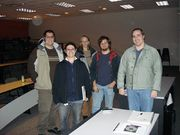
Найди Тоади с первой попытки.

Сражение с catsplosion.
Tarn Adams aka Toady One — погромист, питомец кота по имени Scamps и большой любитель самодельных игр; настолько большой любитель, что в настоящий момент работает разработчиком DF и живёт исключительно на пожертвования фанатов. Защитил диссертацию по математике в Стэнфордском университете, что намекает.
Также в создателях номинально обозначен его брат — Зак Адамс. Обозначен он дизайнером на пару с Тарном. Пишет истории на сайте, предоставляет брату исторические справки, изредка постит новости. Больше ни в чём полезном не замечен.
Немного фольклора
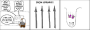
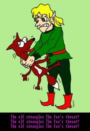
Эльфы любят животных?
The interface is coming — it’s not coming in your lifetime but it’s coming.
Toady One
Didn’t you read the manual? He he he he… the manual… …
Toady One
Stopped people from giving quests to kill themselves.
Toady One
stopped pigs from thinking that they are selling things at the market
Toady One
Did some arena testing on the batch of 8 critters. First I gave squids the brains I had forgotten... squid men don't have skulls, so when I set them on each other there were a greater number of deadly kicks to the head before they all drowned in the air.
Toady One
I went through and fixed a few places where forbidden/on fire weren't being respected for next time. Burning milkable creatures were still a problem for example.
Toady One
The default mental state of a dwarf is madness. Sanity is a temporary condition — a PRIVILEGE you have to EARN!
Wolf cancels Breathe: Interrupted by ≡Ash Bolt≡.
If I remembered what the &%^#*@! lever did, I’d pull it! <…pulls lever anyway…>
[FIREIMMUNE] makes them think that magma is safe but doesn't actually make them fireproof. This can lead to some rather interesting results.
Bug #563: mayor ordered himself beaten for failing to make crystal glass objects
Urist McRandy has been ecstatic lately. He brought somebody to bed lately.
Tosid Idenarzes likes tentacle demons for their corrupt intentions. "There! Now we've covered all of the seven deadly sins."
Kara Mase, the Glory of Amusing: Engraved on the wall is an image of a dwarf and an elf. The dwarf is committing a depraved act on the elf.
Inhospitable climate, drunken bear-fighting men, short and hairy women, and useless, annoying immigrants?
O my gods—
Finland is a dwarf fortress.
Döbesh Udosdeb has been ecstatic lately. He was forced to eat a friend to survive. He enjoyed a truly decadent meal.
Seems to be the way with things on this forum; if an invention doesn't involve death by magma then you know someone's going to go out of their way to make sure it does involve death by magma...then it gets acknowledged as being a great invention :D
Суть !!НАУКИ!! дварфов
My adventurer has an infection in the nail of her "fifth toe, left foot" (also known as, her pinky toe.). Is there a way to cut off my toe so it doesn't kill me? Or is amputation not an option? If I can, how? Should I do it? 15 minutes later. Never mind. My left foot just got ripped off my an alligator.... I almost wish I could tell it "Thanks for the save!"
обитатель форума
"An aura of giving and kindness" just means that said creature originated in a good biome, IIRC. As everyone else has already stated, they still rush your fort and try to massacre your dorfs.
I also got started on jumping. My first jump was off by a factor of 100, so I flew against a cliff and blew apart. I'm still working on it.
Toady One
Дварфы и Двач
«Гоблины захватили ребенка, а мы смеемся. Стража отрубила кузнецу ноги за отказ выполнять мандат, а мы смеемся. Три дварфа прыгнули со скалы, взявшись за руки, а мы смеемся и просим ещё. Самоубийства, убийства, геноцид — мы смеемся. Война, голод, наводнение, осада, увечия — мы смеемся. Мы бездушно играем по любому сюжету, наши предпочтения не основаны на здравом смысле, бесцельные вызовы — наша стихия, мы — истинное лицо ролеплеинга. Мы — дварфоводы. Мы проигрываем весело. И имя нам — легион.»
— Анонимусы-дварфоводы
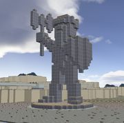
Fuck yeah!
- Дварфофаги пытались вяло зохавать оружейный раздел Двача, но безуспешно.
- Также именно на дваче анонимус выложил зерно карты на которой не было дварфов.
Как заболеть?
На официальном сайте bay12games, но анонимус настойчиво рекомендует скачать/не рекомендует скачивать графическую версию игры, например, отсюда.
Как вы поняли, есть даже свой локальный холивар (!), называемый «ASCII vs Графические аддоны». Труъ-аскии версия выглядит богомерзко, но не так давит на зрение мелким пиксел-артом; версия с tileset’oм усложняет восприятие, но не требует от игрока сурового напряжения фантазии и памяти (A — крокодил, E — слон или эльф, g — гоблин. Правда, похоже?), характерного для рогаликов. Попробуйте оба варианта и используйте, что больше нравится.
Фанаты также сделали визуализаторы работающие в реальном времени, заценить можно, например, тут.
Достал… Бляяя!!!! Как в это играть?
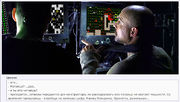
А вот это красотка в красном платье. Ловко она управляется с киркой, да?
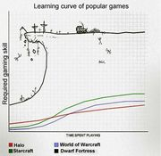
Сравнение кривых обучения в популярных играх
Му-ха-ха-ха! Теперь ты часть overmind`a дварфоводов, подожди немного и общий разум вольётся в тебя!
Ну, погонял я этих гномов, просто и скучно же, чо дальше?
(грустный_awesome.жпг) дфач, я только что просрал крепость. она пала под потоком демонов, главное я даже не думал что они в первом же слое адамантина будут. не помогли даже тренированные бронепихоты. последним гномом в крепости была девочка пяти лет, у неё были янтарные глаза и светлые косички. а ещё она любила лошадок и собак. после того, как на её глазах демоны убили её братика, она схватила своего щенка и побежала с ним в лес. там её догнал и убил пепельный демон. так вот- нахуй такую игру.
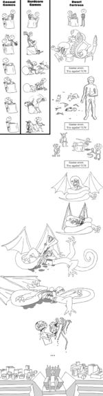
Поздравляем, ты один из тех многих, кому ограниченная фантазия мешает наслаждаться играми-песочницами. Хотя и, похоже, достаточно умён чтобы стандартная порция веселья обошла тебя стороной. Как бы то ни было, тебе повезло, что целая армия тру-задротов уже прошла эту стадию ранее и придумала множество способов увеличить концентрацию смертоносного веселья на игровой тайл, что позволяет сделать игру ещё сложнее и ещё интереснее.
Итак, несколько простых способов усложнить своей крепости жизнь:
- Стартуем без предметов и без навыков. Трех брёвен из телеги хватит, чтобы постоить Trade Depot. (спойлер: Увы, но в текущей версии можно сделать деревянный топор, которым в свою очередь пока ещё можно нарубить дерева).
- Никаких ловушек и подземных ферм.
- И вообще, живите на поверхности. Прятки под землёй — это для трусов-кобольдов!
- Уничтожайте все корованы — ваши высокие и ушастые соседи будут очень рады! Они непременно присоединятся к торжественным парадам гоблинов под вашими стенами.
- И чего уж там, прикормите драгоценностями воришек-кобольдов, чтобы они тоже присылали свои забавные «военные» отряды.
- Рядом обязательно должна быть пещера, чтобы подземное веселье ни в коем случае не обошло вас стороной.
- Разумеется, жить лучше всего в «злой» местности (лучше сразу terrifying) с ядовитыми дождями и туманами, троллями-скелетами, хомячками-зомби и прочими ужасами.
- И в горах, конечно. Нет, дело не в том, что иначе не тру-дварфы, просто вы рискуете лишиться гигантских летающих скелетов.
- А можно на побережье океана или на островке прямо посреди него. Там мало камня и деревьев, пресной воды нет, а морские твари сильны. В «злой» местности к вам в гости будут наведываться зомби-киты и акулы-скелеты — им, кстати, наплевать есть вода под плавниками или нет. (спойлер: по причине небольшого прокола в игромеханике, вы пока таки можете построить опреснитель воды).
- Или в ледяной пустыне, если это уже не сложно, то строимся только на поверхности из льда. Растапливать лёд в воду разрешается. Для максимального экстрима, при генерации мира, можно выставить минимально возможную температуру, при которой смерть от обморожения наступает спустя пару десятков секунд после высадки.
Улавливаешь? Да? Вот ещё пара списков которые явно не стоит копировать сюда: для тех, кому просто нужна цель, и тех, кто просто любит строить. Но, разумеется, всегда лучше сделать что-то своё и показать это всем на форуме.
Алсо, благодаря тому, что Тарн вынужден понемногу выносить объекты в RAW-файлы, коммьюнити сделало несколько неплохих модификаций. Например, можно вместо дварфов поиграть пони.
Дварфлерея
Кстати, о рычагах
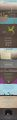
История одной крепости (тред на реддите, FUN included!)
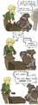
И снова о рычагах
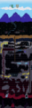
Где-то вы это уже видели
Ссылки
Англоязычная дварфовики
Рускоязычное зеркало дварфовики
Дварфийские хроники — тёплые ламповые истории и легенды.
Архив карт
Англоязычные видео-туториалы
те же видео — можно натравить любой даунлоадер на список
Dwarf The Rapist — утилита для тех кому надоело переназначать работы дварфам вручную, осторожно, вызывает привыкание.
Ветка форума о том, как дварфы делают что-то не так.